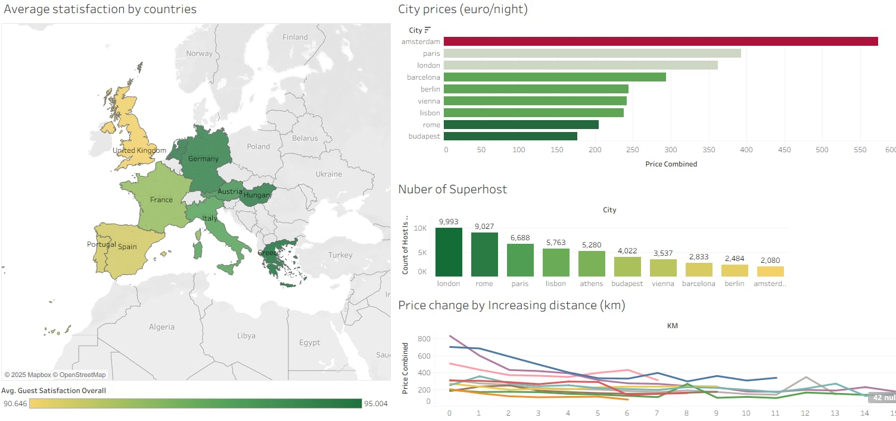

Airbnb
Python
Tableau
I worked with a very detailed Airbnb pricing dataset covering several major European cities. It includes features such as room type, host status, ratings, number of bedrooms and so on...
After cleaning and preparing the data in Python, I used Tableau to visualise geographic price patterns, guest satisfaction differences,
and host quality indicators to highlight the main market differences across European cities.
Analytical Questions
- How do average Airbnb prices vary across European countries?
- Which European cities have the highest number of Superhosts?
- How does guest satisfaction differ between countries?
- How does the distance from the city center affect pricing?
General Data Description
- Scope: The dataset covers Airbnb listings across 10 major European capitals
- Timeframe: Data is segmented into "Weekdays" and "Weekends" to analyze price differences.
- Main Attributes:
- Listing Info: Price (Euro), Room type (Private/Shared/Entire home)
- Host Info: Superhost status (True/False)
- Location: Distance from city center (km), Distance to metro (km).
- Quality Metrics: Guest satisfaction overall (0-100)
Data Preparation and Converting into CSV
Since the source data was split across multiple CSV files,
I needed to merge them into a single dataframe, rename and round specific columns and values.
def combine(csv_1,col_1,csv_2,col_2,city): # Combine the datasets into a single dataset.
csv_1['week time'] = col_1
csv_2['week time'] = col_2
merged = pd.concat([csv_1, csv_2], ignore_index=True)
merged.drop(columns=['Unnamed: 0'], errors='ignore', inplace=True)
merged['city'] = city
return merged
amsterdam = combine(amsterdam_weekdays,'weekdays',amsterdam_weekends,'weekends','amsterdam')
athens = combine(athens_weekdays,'weekdays',athens_weekends,'weekends','athens')
barcelona = combine(barcelona_weekdays,'weekdays',barcelona_weekends,'weekends','barcelona')
berlin = combine(berlin_weekdays,'weekdays',berlin_weekends,'weekends','berlin')
budapest = combine(budapest_weekdays,'weekdays',budapest_weekends,'weekends','budapest')
lisbon = combine(lisbon_weekdays,'weekdays',lisbon_weekends,'weekends','lisbon')
london = combine(london_weekdays,'weekdays',london_weekends,'weekends','london')
paris = combine(paris_weekdays,'weekdays',paris_weekends,'weekends','paris')
rome = combine(rome_weekdays,'weekdays',rome_weekends,'weekends','rome')
vienna = combine(vienna_weekdays,'weekdays',vienna_weekends,'weekends','vienna')
cities = [amsterdam, athens, barcelona, berlin, budapest, lisbon, london, paris, rome, vienna]
europe_data = pd.concat(cities, ignore_index=True)
europe_data.rename(columns={"lng": "Longitude (X)", "lat": "Latitude (Y)", "realSum" : "Price"}, inplace=True)
europe_data["Price"] = europe_data["Price"].round(2)
europe_data.to_csv('.......europe_data.csv',index=False)
Data Visualization
How does the distance from the city center affect pricing?
- For columns, I created a new bin field from the Dist column which gave me less noisy columns.
- For rows, I created a calculated field called Price Combined using the formula AVG(Price).
- To compare the cities: I added the City field to the Color shelf.
- As a last step, I filtered the distance bins and restricted the X-axis to the 0-15 km range.
How does guest satisfaction differ between countries?
- First I dragged the generated Latitude and Longitude fields to the Rows and Columns shelves to create a geographic map layout.
- Since the dataset only contained city names, I duplicated the City field from the Data pane to create a new field called Countries, I assigned the Countries field a Geographic Role of “Country/Region” then manually renamed each city to its country's name.
- I placed the Countries field onto the Marks --> Detail shelf and added AVG(Guest Satisfaction Overall) to Color.
- Finally, I adjusted the color scale to a diverging yellow-to-green palette which made the geographic differences much clearer, highlighting which countries tend to receive higher guest satisfaction scores compared to others.
How do average Airbnb prices vary across European cities?
- For rows: I dragged the City field onto Rows to list all cities included in the dataset.
- For columns: I placed AGG(Price Combined) onto Columns to calculate each city's average Airbnb price.
- To enhance visual comparison, I dragged AGG(Price Combined) onto the Color shelf and applied a five-step Red-Green Diverging palette.
Which European cities have the highest number of Superhosts?

- For this chart, I dragged the City dimension onto the Columns shelf so that each city appears as a separate bar along the horizontal axis.
- I dragged 'Host Is Superhost' onto the Rows shelf, then i changed its Field Role to Count, which counted how many listings belong to each city.
- I added CNT(Host Is Superhost) to the Label field so the exact number of superhosts appears on top of each bar.
- I also dragged CNT(Host Is Superhost) to Color shelf, so the height and the color shading both reflect the number of superhosts.
- In the end, I chose a green gradient palette and applied it, making higher values appear darker green.
Finally, I compiled the individual sheets into a single interactive dashboard.
You can explore the fully interactive, high-resolution version on my Tableau Public profile: LINK
